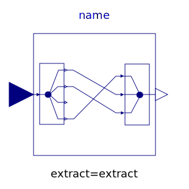
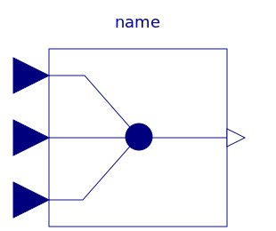
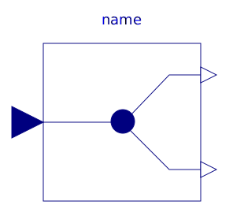
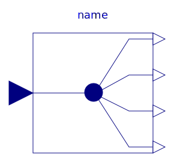

This package contains blocks to combine and extract signals.
| Name | Description |
|---|---|
| Signal replicator | |
|  ExtractSignal | Extract signals from an input signal vector |
| Extract scalar signal out of signal vector dependent on IntegerRealInput index | |
| Multiplexer block for two input connectors | |
|  Multiplex3 | Multiplexer block for three input connectors |
| Multiplexer block for four input connectors | |
| Multiplexer block for five input connectors | |
| Multiplexer block for six input connectors | |
|  DeMultiplex2 | DeMultiplexer block for two output connectors |
| DeMultiplexer block for three output connectors | |
|  DeMultiplex4 | DeMultiplexer block for four output connectors |
| DeMultiplexer block for five output connectors | |
| DeMultiplexer block for six output connectors | |
| Pass a Real signal through without modification | |
| Pass a Integer signal through without modification | |
| Pass a Boolean signal through without modification |